This homework was a lot of fun! In this project I learned the basics of how computers convert conceptual triangles into actual pixels colored and displayed on a screen. This is the very framework under which all modern 2D and 3D computer graphics are rendered.
In summary, this homework was a great tutorial in how to convert shapes cleanly from "world space" into pixel space, and color them to represent any abstract art or images we want.
I now feel confident that I understand the basics of how rasterization works, so that when we move onto 3D rendering/shading, I will understand how textures are applied to surfaces and then rendered.
It was also very fascinating learning about how many different applications there are for linear algebra and barycentric coordinates in computer graphics, I had never imagined how many different times linear interpolation and matrix transformations would come up, even before we ventured into 3D space!
The first task in this assignment is to implement the function rasterize_triangle in rasterizer.cpp.
Rasterizing a triangle, in principle is pretty simple: for each pixel in the bounding area, determine if it lies within the triangle. If it does, set the pixel color to the triangle color. If not, leave it as is. The way I chose to do this was to use the barycentric coordinate system. This is much simpler to code than checking if the pixel is on the correct side of the three edges of the triangle, because it is agnostic of the winding order of the triangle's vertices. The barycentric coordinates are like the weights of a weighted average of the triangle's vertices. They must add up to 1, because they are weights. Ultimately, each point in 2D space can be uniquely expressed this way, since there are three equations and three unknowns. The naive implementation follows:
Matrix3x3 barycentric = Matrix3x3({ x0, x1, x2, y0, y1, y2, 1.0f, 1.0f, 1.0f });
Matrix3x3 barycentric_inverse = barycentric.inv();
Vector3D minXY = barycentric_inverse.operator*(Vector3D(min_x+0.5, min_y+0.5, 1));
Vector3D incX = barycentric_inverse.operator*(Vector3D(1, 0, 0));
Vector3D incY = barycentric_inverse.operator*(Vector3D(0, 1, 0));The first 3x3 matrix is the barycentric coordinate matrix. Taking the inverse allows it to be multiplied by a vector to get the barycentric coordinates. If and only if the barycentric coordinates are all positive, this means the point is inside the triangle:
for (int i = 0; i < dy; i++) {
temp2 = temp;
for (int j = 0; j < dx; j++) {
if (temp2[0] >= 0 && temp2[1] >= 0 && temp2[2] >= 0) {
fill_pixel(min_x + j, min_y + i, color);
}
temp2 += incX;
}
temp += incY;
}The benefit of having temp, temp2, incX, and incY is that it saves on memory and computation, since we don't have to multiply by the inverse of the barycentric matrix for each pixel. Instead, we can just add the increment vectors to the current point in the triangle. It is, as the homework spec says, "no worse than one that checks each sample within the bounding box of the triangle," because this is exactly what it does. Earlier on in the code, the minimum and maximum x and y coordinates of the triangle are calculated, which serves as the bounding box.
Here is the result of the implementation:
|
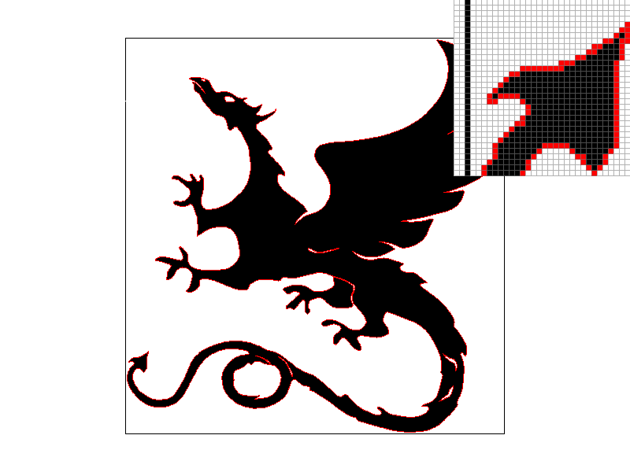
|
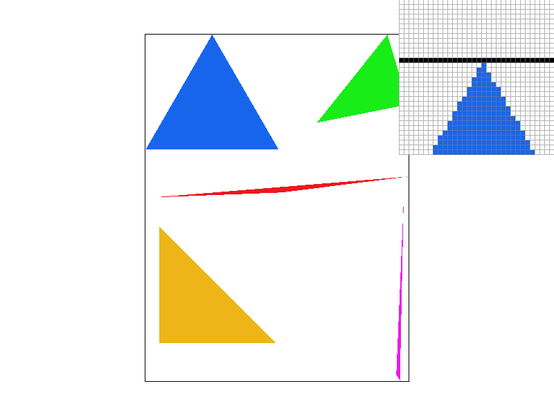
|
|
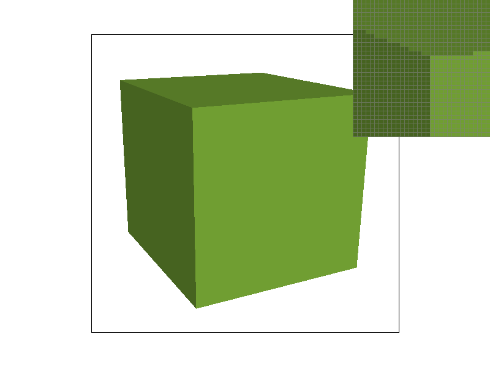
|
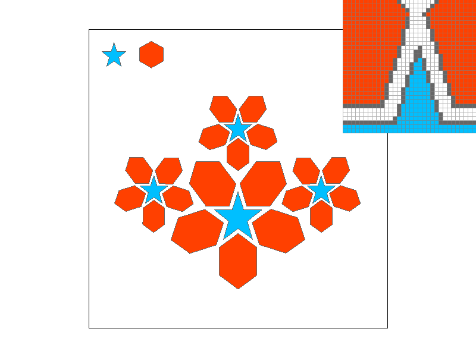
|
There are some interesting things to note about the results. First, I noticed that occasionally,
the triangles I drew in test4.svg had tips that protruded out of the black bounding box provided
by the test case software. This [a bit of an ego boost] was in fact not a bug with the rasterization code,
but rather with the test software itself. The top and bottom edges of the rectangular border, due to a
sign error, were being drawn 2 pixels too low and too high, respectively.
Changing the sign of the increment commands in drawrend.cpp at approximately lines 310-313
fixed the issue:
The other thing to note is that, since this is a very basic rasterization algorithm, there are lots of artifacts (i.e. jaggies) in the rendered images, especially in the long, thin triangles in test4.svg. This will be fixed in the next task.
The first optimization I implemented was correct, but not very efficient.
It checks each pixel in the entire bounding box, even if mathematically it is impossible for a pixel to be colored. The main example of this is when we are going along a row, and we have already passed the end of the triangle, but we continue to check pixels in that row. We can make a slight speedup by installing a check that I call "active": if the row has already drawn some pixels and then we pass the end of the triangle, we break out of the loop.
for (int i = 0; i < dy; i++) {
active = false;
temp2 = temp;
for (int j = 0; j < dx; j++) {
if (temp2[0] >= 0 && temp2[1] >= 0 && temp2[2] >= 0) {
fill_pixel(min_x + j, min_y + i, color);
active = true;
}
else if (active) {
//if the column has already drawn some pixels, this means you have finished drawing all the necessary pixels for that row
break;
}
temp2 += incX;
}
temp += incY;
}Additionally, there are some more optimizations built into the code. For instance, we use row-major ordering, instead of column-major ordering. In other words, we iterate over the rows first, and then the columns within each row. This is much more efficient due to the way the frame buffer is stored in cache, since it is also row-major. However, it is hard to test the relative performance of various speedup approaches, also because of caching within the computer. Running the exact same code multiple times yields very different results, and the speedup is not always consistent. Sometimes, the speedup was negative, meaning the code was slower after the optimization! My guess is that this is because the amount of cache misses is not consistent, and the code is not very cache-friendly. Nonetheless, I think the speedup is still significant, and it is a good example of how to optimize code for performance.
If I were to spend more time on this, I would invest more heavily in optimizing the code for the cache/CPU/memory. However, this would make the rasterization code much more complex and hard to debug. Also I simply like barycentric coordinates.
The second task was to implement a basic supersampling algorithm. The instructions suggested saving an entire supersampled frame buffer and then scaling it down, but I decided that this was unnecessarily complicated and memory intensive. Instead, I decided to make a helper function as follows:
float alpha_helper(Vector3D temp, Vector3D incX, Vector3D incY, int sample_rate) {
// x and y should be in barycentric coordinates already
float samples = sqrt(sample_rate);
float interval = (1.0f / (samples + 1.0f));
Vector3D incXFine = interval * incX;
Vector3D incYFine = interval * incY;
Vector3D temp2;
float alpha = 0;
float alpha_inc = (1.0f / sample_rate);
for (int i = 0; i < samples; i++) {
temp += incYFine;
temp2 = temp;
for (int j = 0; j < samples; j++) {
temp2 += incXFine;
if (temp2[0] >= 0 && temp2[1] >= 0 && temp2[2] >= 0) {
alpha += alpha_inc;
}
}
}
return alpha;
}
The benefit of this helper is that it allows us to create an "alpha" value for new triangles that are drawn.
The alpha value is the percentage of the triangle that is covered by the pixel.
This way, we don't need to store an entire upsampled frame buffer, but instead directly calculate the color of the pixel.
The above code works as follows: for instance, if sample_rate is 16, we will create 4x4 grid.
We then iterate over the grid, and for each cell, we check if the point is inside the triangle.
If it is, we add the alpha_inc to the alpha value. Alpha_inc is 1/sample_rate, so we add 1/16 to the alpha value for each cell that is inside the triangle.
This way, we can never have an alpha value greater than 1, and we can never have an alpha value less than 0.
Finally, we return the alpha value.
The triangle detection code uses the incX and incY vectors that we already calculated, in barycentric coordinates, so I saved code.
Then, I needed to update fill_pixel to use the alpha helper function. fill_pixel now looks like this:
void RasterizerImp::fill_pixel(size_t x, size_t y, Color c, float alpha) {
int location = y * width + x;
sample_buffer[location] = c*alpha + sample_buffer[location] * (1-alpha);
}
The weighted average uses the new alpha value to blend the new color with the old color. This is done so that the old color is not completely overwritten by the new color, which would create the same jaggies as before.
Finally, I update rasterize_triangle to use the alpha helper function. rasterize_triangle now looks like this:
for (int i = 0; i < dy; i++) {
active = false;
temp2 = temp;
for (int j = 0; j < dx; j++) {
alpha = alpha_helper(temp2, incX, incY, sample_rate);
if (alpha > 0) {
fill_pixel(min_x + j, min_y + i, color, alpha);
active = true;
}
else if (active) {
//if the column has already drawn some pixels, this means you have finished drawing all the necessary pixels for that row
break;
}
temp2 += incX;
}
temp += incY;
}
I also had to set the alpha value to 1 for points and lines, as the instructions said to not supersample them.
Here is the result of the implementation:
|
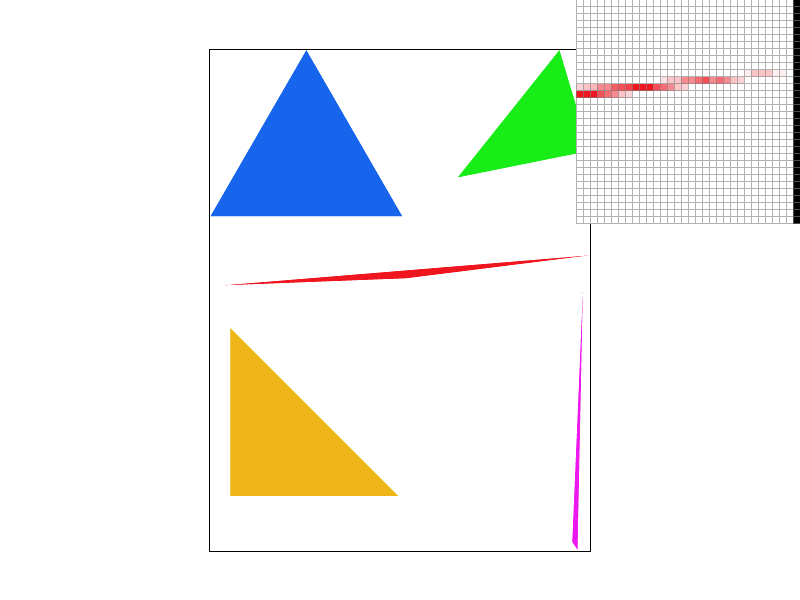
|
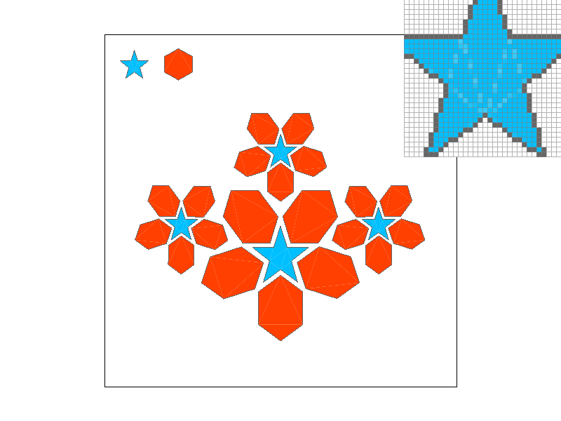
|
However, there is one more quick fix that I need to make before I'm done. On the right picture, you may notice that the borders between triangles are a lighter white color, which highlights the way in which the processor breaks polygons down into triangles. This makes it look ugly. To fix this, I will simply simultaneously sample the point at the center of the pixel with alpha 1, with the supersampling as a fallback. This way there will be no visible borders:
This should also theoretically improve the performance of the code, since we only bother to supersample if the single center point fails to be inside the triangle. So for the pixels that are deep inside the triangle, we don't bother supersampling.
main_alpha = alpha_helper(temp2, incX, incY, 1.0);
if (main_alpha > 0) {
active = true;
fill_pixel(min_x + j, min_y + i, color, 1.0);
}
else {
//if it's not in the main pixel, try supersampling.
alpha = alpha_helper(temp2, incX, incY, sample_rate);
if (alpha > 0) {
fill_pixel(min_x + j, min_y + i, color, alpha);
active = true;
}
else if (active){
//if the column has already drawn some pixels, this means you have finished drawing all the necessary pixels for that row
break;
}
}
Here are the final results of the implementation:
|
|
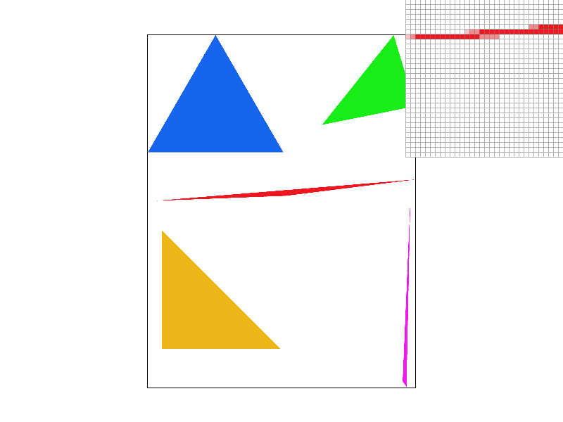
|
|
|
As we can see, the supersampling alpha method creates a smoother transition between what is considered "inside" and "outside" the triangle. In fourier space, this has the equivalent of attenuating high frequencies, or being a low-pass filter. This makes sharp edges feel more "defined" and reduces the likelihood of pixels sitting off by themselves.
This part is rather self-explanatory. Transformations use homogeneous coordinates, which means that the bottom row will always be 0, 0, 1. The top left is a 2x2 matrix, and the right column is dx and dy. For rotation and scaling, dx and dy are 0. The 2x2 matrix is responsible for rotation and scaling. The interface automatically normalizes the vectors to have a third component of 1.
Here's the results:
|
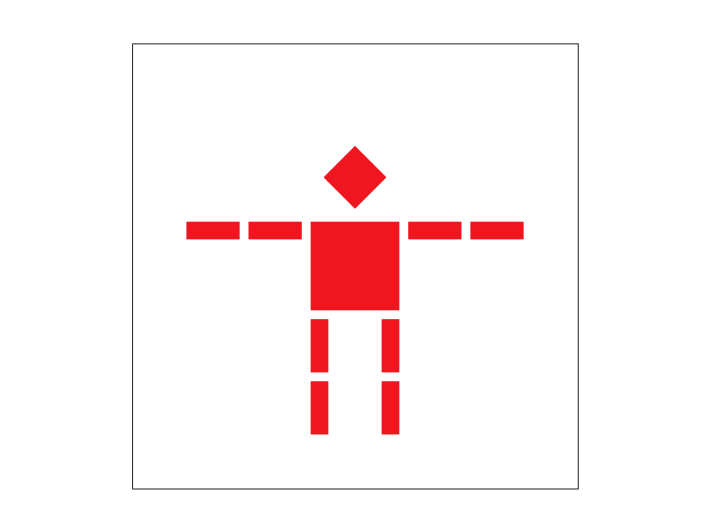
|
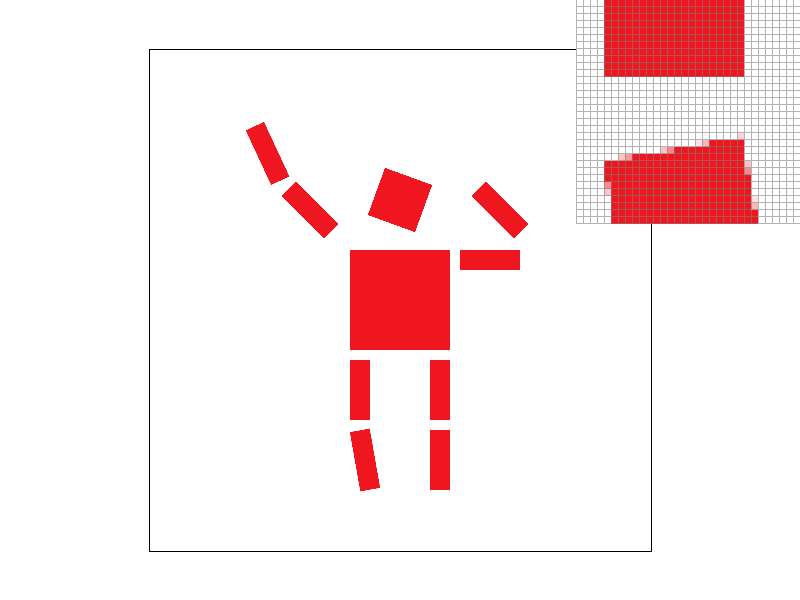
|
As I mentioned in task 1, barycentric coordinates are a way of representing a point in 2D space as a weighted sum of three other points.
Since from basic geometry, any three points make up a unique triangle, barycentric coordinates provide a way of
representing a point in terms of its relationship to the three vertices of the triangle.
The easiest way to think about barycentric coordinates is with an example: When the coordinate value of the point is 1, it is directly
on top of the vertex for which the coordinate value is 1. If the value is 0, it is on the edge of the triangle opposing that vertex, and when it is less
than 0, it is outside the triangle, further away from that vertex.
Barycentric coordinates are useful, as demonstrated with my implementation in task 1, for determining if the point is inside the triangle. If all three barycentric coordinates are positive, the point is inside the triangle. Otherwise, it is not. This is also now useful for the case of determining a point's color, since we can now use the three barycentric coordinates to form a weighted average of the three vertices' colors. This required exactly one new line of code in my implementation from before:
Color color = temp2[0] * c0 + temp2[1] * c1 + temp2[2] * c2;Since the code already uses barycentric coordinates, temp2 is exactly what we want to use for the weighted average.
Here is the final result of the implementation:
We can still even observe the benefits of anti-aliasing, with just this one line of code change from above:
Pixel sampling is the process of determining the color of a pixel based on the texture coordinates. The necesity becomes apparent when we have
a texture map with integer pixel coordinates, but the location of the "screen pixel" in the texture is not an exact integer (somewhere in between texture pixels).
So, how do we determine the color of the pixel?
The simplest way to do this is to do nearest neighbor sampling, which essentially is "pick the pixel that's closest".
In my code, I chose to do this by simply rounding the x and y values to the nearest integer and using those values.
Another way to do sampling is called bilinear sampling, which is a weighted average of the 4 surrounding pixels. Similar to
Barycentric coordinates, if a point is closer to one lattice point, it will be more heavily weighted than the others.
In my code, I chose to do this by lerping (linearly interpolating) in the x direction first, and then in the y direction.
The code for this one was, again, pretty simple. I used this neat little trick to save on the cost of having an "if" statement inside the heavy loop area:
Color (Texture::*sample_func)(Vector2D, int) = &Texture::sample_nearest;
if (psm == P_NEAREST) {
sample_func = &Texture::sample_nearest;
}
else if (psm == P_LINEAR) {
sample_func = &Texture::sample_bilinear;
}
Then, I used the following few lines inside the loop:
u = temp2[0] * u0 + temp2[1] * u1 + temp2[2] * u2;
v = temp2[0] * v0 + temp2[1] * v1 + temp2[2] * v2;
uv = Vector2D(u, v);
color = (tex.*sample_func)(uv, 0);
This part is very similar to Task 4, since it's just another weighted average using the barycentric coordinates. From there, I plugged it into tex.*sample_func:
Color Texture::sample_nearest(Vector2D uv, int level) {
// TODO: Task 5: Fill this in.
auto& mip = mipmap[level];
size_t x = round(uv.x*width);
size_t y = round(uv.y*height);
x = min(x, width-1);
y = min(y, height-1);
return mip.get_texel(x, y);
}
Color Texture::sample_bilinear(Vector2D uv, int level) {
// TODO: Task 5: Fill this in.
auto& mip = mipmap[level];
size_t x = floor(uv.x * width);
size_t y = floor(uv.y * height);
float alpha_x = uv.x * width - x;
float alpha_y = uv.y * height - y;
x = min(x, width - 2);
y = min(y, height - 2);
Color a = mip.get_texel(x, y);
Color b = mip.get_texel(x+1, y);
Color c = mip.get_texel(x, y+1);
Color d = mip.get_texel(x+1, y+1);
Color e = lerp(a, b, alpha_x);
Color f = lerp(c, d, alpha_x);
Color g = lerp(e, f, alpha_y);
return g;
}
I also made a helper function for the bilinear sampling, lerp:
static Color lerp(Color a, Color b, float alpha) {
return a * (1-alpha) + b * (alpha);
}
Here are the results of the implementation:
|
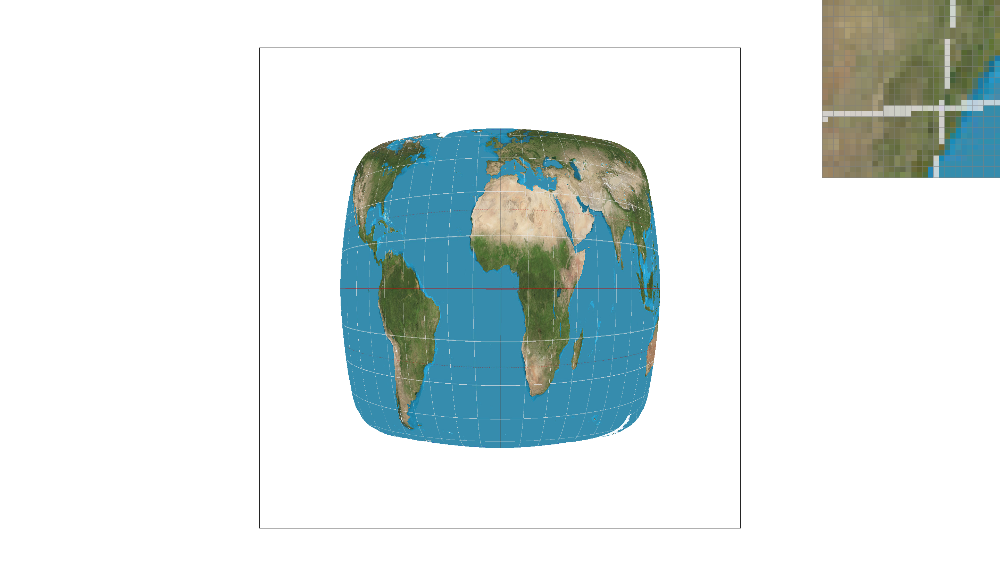
|
|
|
|
|
|
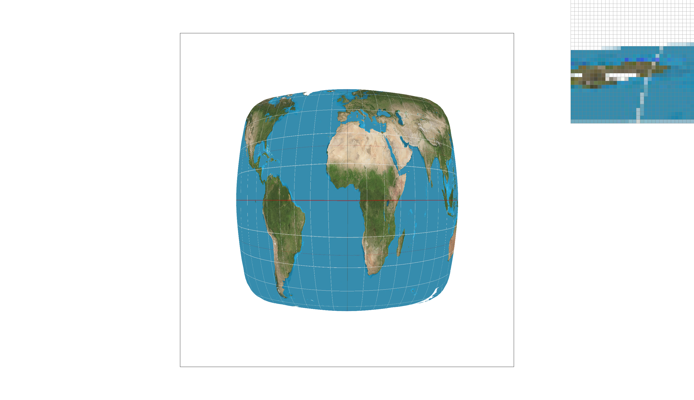
|
|
As you can see, the sample rate doesn't have a major effect on the quality of the middle part of the image,
because all the triangles in the middle part of the image are directly adjacent to each other and so borders
between them are not visible.
However, the bilinear sampling makes a huge difference as far as anti-aliasing is concerned.
The white latitude and longitude lines are much smoother and more accurate. The expense of this is that
bilinear sampling is more expensive than nearest neighbor sampling, and it also removes some high-frequency data from the image.
The sample rate does have a minor beneficial effect on the edges of the image, where there's a sharp transition between the triangles
that make up the images and the background.
Bilinear sampling (and also supersampling) makes the largest difference in images where there are very sharp transitions between colors.
In other words, it helps smooth out high-frequencies, i.e. anti-aliasing.
Level sampling is a technique for texture mapping that both saves memory and also performs a bit of anti-aliasing simultaneously.
The idea is that, since we are already sampling the texture at a lower resolution for farther-away objects, we might as well just
store a lower-resolution version of the texture this use case. This is known as mipmapping.
Level sampling is the process of selecting the appropriate mipmap level based on an assessment of how much we're downsampling between the pixel
and the texture. For instance, if a distance of one pixel is a distance of two pixels on the texture map, we can use a mipmap level that is 2x smaller on each axis.
This is usually known as mipmap level 1, since level 0 is the original texture. They scale down by factors of 2 on both axes simultaneously.
Different methods of level sampling exist, similar to how we had different methods of pixel sampling. There's the nearest neighbor approach, which uses the nearest integer value
for the mipmap level. Then there's also the linear interpolation approach, which uses a weighted average of the two nearest mipmap levels, similar to how we did for pixels.
The class notes mention that simultaneously using linear sampling for pixel sampling and level sampling is known as trilinear sampling.
This time I won't explicitly include the code because it's full of really hairy if statement chains, but in essence
the hardest part is finding what mipmap level to use.
We compute the Jacobian matrix of the transformation from the screen pixel to the texture pixel by seeing how a "nudge" in pixel X/Y affects the texture coordinates U/V.
This provides four values that describe the rates of change; we take the L2 norm and then take the max of both two-vectors to get the max; then we take the log base 2, which is our mipmap level.
We then have to decide whether to linearly interpolate or just use the nearest integer mipmap level.
After this, we then sample the texture at the appropriate mipmap level and return the color.
Here are the results of the implementation:
|
|
|
|
|
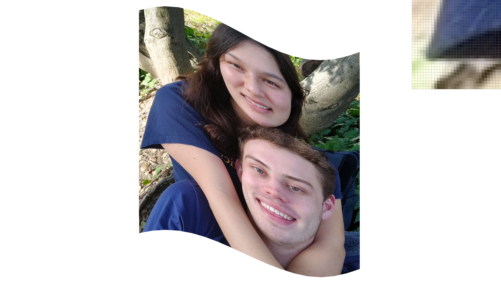
|
As we can see, the linear pixel sampling is much smoother than the nearest neighbor sampling. There is a notable improvement as far as anti-aliasing is concerned with bilinear sampling. The variation in level sampling is not as noticeable, but if you zoom in extra close, you can see that the mipmapping makes all the details a bit less crisp. This is because the mipmapping is downsampling the texture in both axes simultaneously, which can cause streaks in particular axis to be smoothed out.
In summary, we have the following three techniques:
Thanks so much for reading all the way to the end! This was a super fun project :)